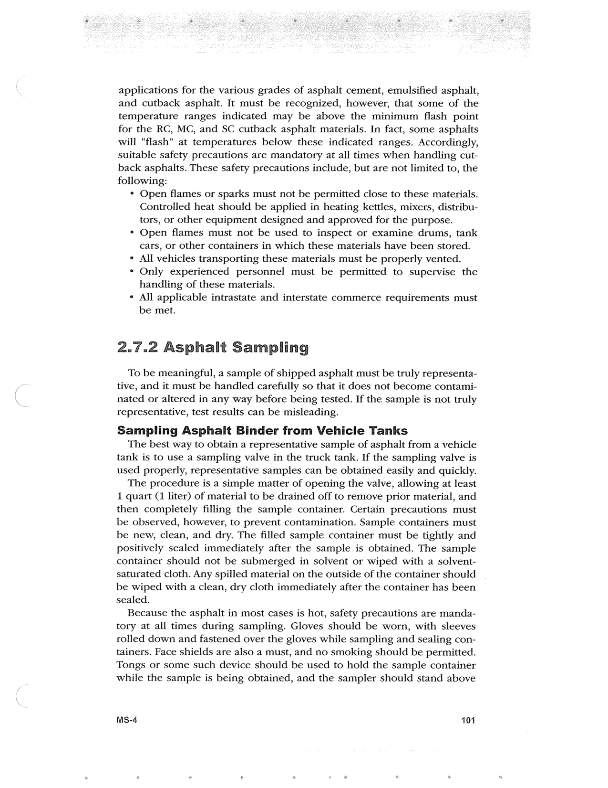

PDF page 135 · book page sequence 101


Searchable transcription
Unproofread OCR · 448 detected words; mean OCR confidence 95.44. Check technical values, symbols and table columns against the scan.
applications for the various grades of asphalt cement, emulsified asphalt, and cutback asphalt. It must be recognized, however, that some of the temperature ranges indicated may be above the minimum flash point for the RC, MC, and SC cutback asphalt materials. In fact, some asphalts will “flash” at temperatures below these indicated ranges. Accordingly, suitable safety precautions are mandatory at all times when handling cut- back asphalts. These safety precautions include, but are not limited to, the following:
° Open flames or sparks must not be permitted close to these materials. Controlled heat should be applied in heating kettles, mixers, distribu- tors, or other equipment designed and approved for the purpose.
* Open flames must not be used to inspect or examine drums, tank cars, or other containers in which these materials have been stored.
¢ Ail vehicles transporting these materials must be properly vented.
° Only experienced personnel must be permitted to supervise the handling of these materials.
¢ All applicable intrastate and interstate commerce requirements must be met.
2./.2 Asphalt Sampling
To be meaningful, a sample of shipped asphalt must be truly representa- tive, and it must be handled carefully so that it does not become contami- nated or altered in any way before being tested. If the sample is not truly representative, test results can be misleading.
Sampling Asphalt Binder from Vehicle Tanks
The best way to obtain a representative sample of asphalt from a vehicle tank is to use a sampling valve in the truck tank. If the sampling valve is used properly, representative samples can be obtained easily and quickly.
The procedure is a simple matter of opening the valve, allowing at least 1 quart (1 liter) of material to be drained off to remove prior material, and then completely filling the sample container. Certain precautions must be observed, however, to prevent contamination. Sample containers must be new, clean, and dry. The filled sample container must be tightly and positively sealed immediately after the sample is obtained. The sample container should not be submerged in solvent or wiped with a solvent- saturated cloth. Any spilled material on the outside of the container should be wiped with a clean, dry cloth immediately after the container has been sealed.
Because the asphalt in most cases is hot, safety precautions are manda- tory at all times during sampling. Gloves should be worn, with sleeves rolled down and fastened over the gloves while sampling and sealing con- tainers. Face shields are also a must, and no smoking should be permitted. Tongs or some such device should be used to hold the sample container while the sample is being obtained, and the sampler should stand above
Ms-4 1014